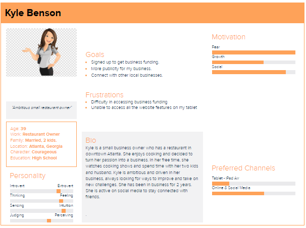
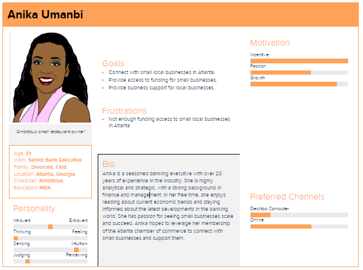

The Target Audience
The target audience is local businesses and business owners such as small businesses large corporations, and individuals who are self-employed or own a small business. Also, the Chamber targets professionals in the community, such as lawyers, accountants, and real estate agents, as well as community leaders and local government officials.
Personas
 Scenario
- Can I promote my business?
- We want you and your business to succeed.We promote such resources to actualize this for you.
- Can I network with others in my industry?
- Yes. You meet new people that will serve as an advantage.
- Are there funding opportunites for my business?
- Yes. We seek partnership with financial companies on how to supportour members.
- What channels are available to advertise my business?
- We support all channels to promote your business, including advertisement in the local media.
- What are the benefits of becoming a member?
- There tons of benefits of becoming a member. You have the opportunity to network with different people from all walks of life and get referrals for your business.
- Is membership open to professionals?
- Yes. The Chamber is open to both business owners and professionals.
- Is membership free?
- We offer both free and paid membership. Each comes with its benefits.